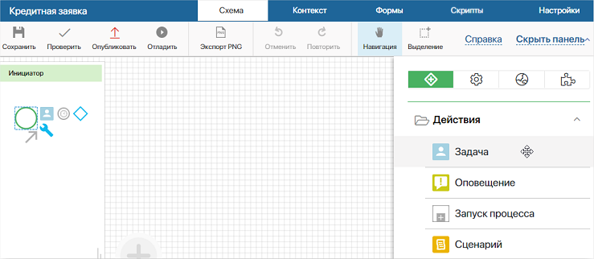
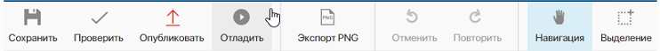
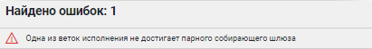
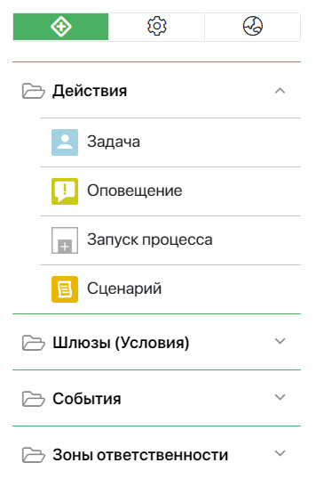

Модель (схема) бизнес-процесса описывает все действия, которые должны выполнить сотрудники, чтобы достигнуть определённой цели. Описание осуществляется при помощи таких графических элементов, как зоны ответственности, задачи, события, шлюзы, оповещения.
Схемы процессов, смоделированные в системе, являются исполняемыми. Это значит, что все задачи, уведомления и т. д. будут автоматически приходить соответствующим сотрудникам на нужном этапе.
Все процессы, заданные в системе по умолчанию, импортированные или созданные вами, доступны в разделе Администрирование > Бизнес-процессы.
начало внимание
Моделировать процессы могут только пользователи, входящие в группу Администраторы.
конец внимание
Создать бизнес-процесс
Вы можете добавить и настроить бизнес-процесс:
- на уровне приложения — чтобы описать логику работы этого приложения. Подробнее читайте в статьях «Бизнес-процессы на уровне приложения», «Cвязать приложение с бизнес-процессом»;
- на уровне раздела — для реализации логики работы раздела. В таком процессе можно использовать и устанавливать связи между данными нескольких приложений, созданных в разделе. Подробнее читайте в статье «Бизнес-процессы на уровне раздела»;
- на уровне компании — это позволит использовать в процессе данные из разных разделов, которые не нужно экспортировать;
- в пользовательском модуле. Подробнее читайте в статье «Процессы в модулях».
Например, чтобы построить бизнес-процесс на уровне приложения, в его настройках выберите пункт Бизнес-процессы и затем нажмите кнопку +Процесс. Откроется страница моделирования процесса в дизайнере бизнес-процессов.
Страница описания процесса

Вверху страницы расположены вкладки:
- Схема — графическое описание процесса;
- Статусы — отображается, если процесс создан на уровне приложения. Содержит статусы приложения;
- Контекст — переменные, используемые в процессе;
- Формы — шаблоны форм задач и событий, созданные для процесса;
- Скрипты — все скрипты, используемые в процессе;
- Настройки — общие настройки процесса: настройки запуска, шаблон названия, форма карточки экземпляра, API.
Под вкладками располагается верхняя панель инструментов дизайнера.

- Сохранить — схема процесса будет сохранена как черновик, при этом опубликованный процесс не изменяется. Для быстрого сохранения процесса нажмите сочетание клавиш Ctrl+S, находясь на вкладке Схема;
- Проверить — проверяется наличие логических ошибок в схеме процесса. Если схема содержит ошибки, в нижней части страницы появится предупреждение;

- Опубликовать — чтобы система могла выполнить процесс, его нужно опубликовать. Не забывайте публиковать процесс каждый раз после того, как вы вносите изменения. Сохранённые, но не опубликованные изменения не будут доступны пользователям при выполнении бизнес-процесса;
- Отладить — во время отладки процесс воспроизводится пошагово в режиме реального времени. Таким образом вы можете проверить логику операций, оценить, насколько удобно и понятно настроены формы задач, убедиться, что все скрипты отрабатывают верно;
- Экспорт PNG — схема процесса будет загружена на компьютер в виде изображения;
- Отменить — отменяет последнее действие;
- Повторить — повторяет последнее отмененное действие;
- Навигация — воспользуйтесь этой кнопкой, чтобы перемещать лист для моделирования;
- Выделение — воспользуйтесь этой кнопкой, чтобы выделить несколько графических элементов на схеме.
В правой части страницы расположена панель с графическими элементами для описания процесса.

Вкладка Стандартные элементы содержит:
На вкладке Системные элементы расположены:
- Управление статусом;
- Ожидание статуса;
- Создание элемента;
- Изменение элемента;
- Выдача прав на элемент;
- Присваивание;
- Получить руководителя;
- Ознакомление;
- Согласование;
- Закрыть согласование;
- Генерация по шаблону;
- Генерация по файлу;
- Конвертация файла в PDF;
- Наложение водяных знаков;
- Подписать;
- Формирование пакета;
- Регистрация документа;
- графические элементы системного решения ELMA365 Проекты;
- графические элементы системного решения ELMA365 CRM;
- TO-DO;
- Инициативное сообщение в линию;
- Ответное сообщение в линию.
На вкладке Интеграции отображаются интеграции с внешними системами, а также графические элементы, которые входят в состав установленных бизнес-решений и включённых модулей:
- Webhook;
- Оповещение на email;
- Отправить SMS;
- Заявка на выпуск УНЭП;
- Ожидание выпуска УНЭП;
- графические элементы модуля Диадок.